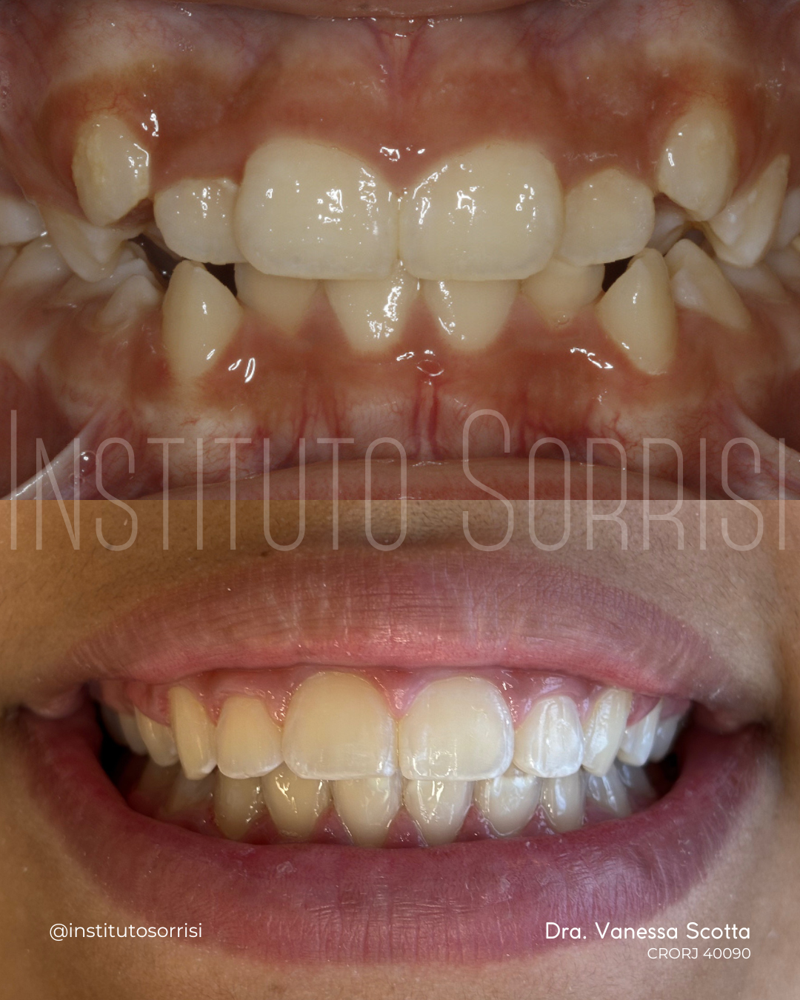
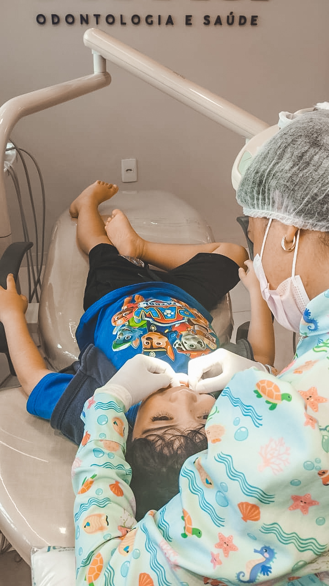
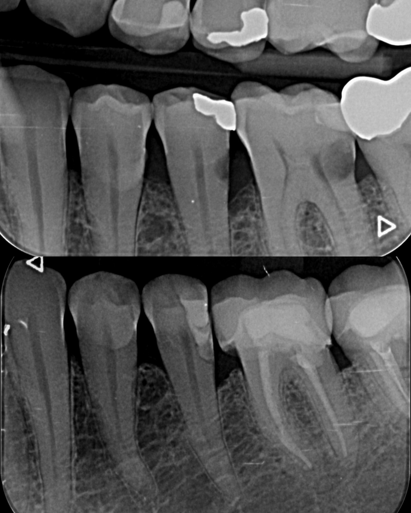
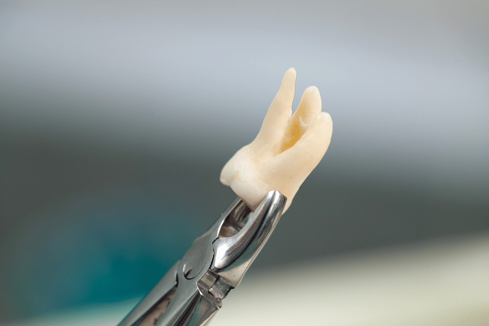

Nossos
Tratamentos
Cuidamos de toda a sua saúde bucal com tecnologia, carinho e uma equipe altamente especializada.

Implante Dentário
O implante dentário é a solução mais moderna e duradoura para substituir dentes perdidos. Com tecnologia de ponta, devolvemos função, estética e autoestima com naturalidade.
A cirurgia e a coroa sobre implante são realizadas pelo Dr. Ringo, responsável pela cirurgia oral, implantes dentários e no caso de implantes pela reabilitação protética complementar fica a cargo da Dra. Juliana Sartori.
- Implantes de titânio de alta qualidade
- Resultado natural, funcional e duradouro
- Acompanhamento pré e pós-operatório
Ortodontia & Invisalign®
O Instituto Sorrisi é clínica credenciada Invisalign Doctor, oferecendo tratamento com alinhadores invisíveis, a solução mais discreta e confortável para alinhar os dentes.
A Dra. Vanessa Scotta, CEO e especialista em Ortodontia, conduz os tratamentos com aparelhos e alinhadores transparentes para adultos e adolescentes.
- Alinhadores Invisalign® certificados
- Aparelhos estéticos e convencionais
- Tratamento para adultos e adolescentes
- Resultado previsível com simulação digital


Odontologia Estética
Transforme seu sorriso com os tratamentos estéticos mais modernos: clareamento dental, lentes de contato dental em porcelana e harmonização do sorriso.
Cada tratamento é planejado para o paciente, com resultado natural e alinhado aos traços do rosto.
- Clareamento dental (consultório e caseiro)
- Lentes de contato dental em porcelana
- Facetas e resinas compostas
- Harmonização do sorriso
Odontopediatria
A Dra. Sindy Alves é especialista em odontopediatria e cuida da saúde bucal dos pequenos desde a primeira dentição, criando uma relação de confiança e afeto com cada criança.
Nosso ambiente é cuidadosamente adaptado para receber crianças, tornando a visita ao dentista uma experiência tranquila e positiva desde cedo.
- Atendimento desde bebês até adolescentes
- Prevenção e controle de cáries infantis
- Selantes e fluoretação
- Ambiente acolhedor e lúdico


Tratamento de Canal
O tratamento de canal (endodontia) é fundamental para salvar dentes comprometidos por infecção ou cárie profunda, evitando extrações desnecessárias.
Com técnicas modernas e anestesia eficaz, o procedimento é mais confortável do que parece, e o resultado preserva seu dente natural.
- Procedimento rápido e confortável
- Salva o dente natural, evitando extração
- Anestesia eficaz e segura
- Acompanhamento pós-tratamento
Limpeza & Prevenção
A limpeza dental profissional (profilaxia) é o principal aliado da saúde bucal. Recomendamos consultas periódicas para manter os dentes e gengivas saudáveis e prevenir problemas futuros.
Nossas limpezas incluem remoção de tártaro, polimento e orientação de higiene bucal personalizada para cada paciente.
- Remoção de tártaro e manchas
- Polimento e fluoretação
- Orientação de higiene bucal
- Avaliação preventiva completa


Extração Dentária
Quando necessário, as extrações dentárias são realizadas com toda a segurança, técnica e cuidado para minimizar o desconforto e garantir uma recuperação tranquila.
Realizamos desde extrações simples até cirurgias de sisos (dentes do juízo), sempre com acompanhamento pré e pós-operatório completo.
- Extrações simples e cirúrgicas
- Remoção de sisos
- Anestesia segura e eficaz
- Cuidados e orientações pós-operatórias
Transformações realizadas
pela nossa equipe
Cada sorriso é único. Confira alguns dos casos reais tratados pela Dra. Vanessa Scotta e pela equipe do Instituto Sorrisi.


Imagens compartilhadas com autorização dos pacientes · @institutosorrisi